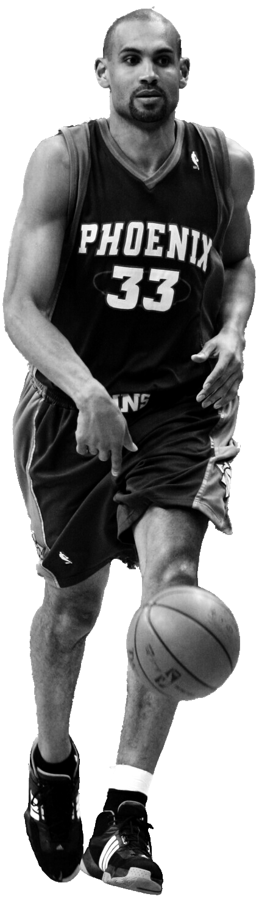
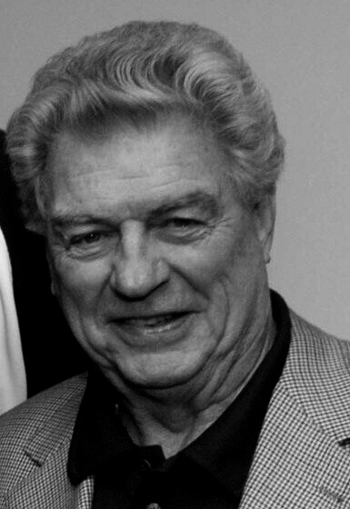

BARCELONA 1992 · KEN HACKMAN (USAF) · DOMINIO PÚBLICO · PORTADA: RECREACIÓN
JORDAN
MAGIC
BIRD

GRANT HILL
UNO DE LOS UNIVERSITARIOS
FOTO DE 2007 · KEITH ALLISON · CC BY-SA 2.0
HILL
WEBBER
HURLEY
UNIVERSITARIOS
0
0
DREAM TEAM
0
0
MARCADOR: RECREACIÓN
KRZYZEWSKI
AYUDANTE EN 1992
DoD · WILLIAM D. MOSS · 2006 · DOMINIO PÚBLICO

CHUCK DALY
SELECCIONADOR
C. J. McNEELEY (US NAVY) · 2006 · DOM. PÚBLICO
FOTOS: KEN HACKMAN (USAF), CHAD J. McNEELEY (US NAVY), WILLIAM D. MOSS (DoD) – DOMINIO PÚBLICO · KEITH ALLISON (CC BY-SA 2.0) · VÍA WIKIMEDIA COMMONS PASE, MARCADOR, BANQUILLO Y PIZARRA: RECREACIÓN FUENTES: AP, FOX SPORTS, CBS SPORTS